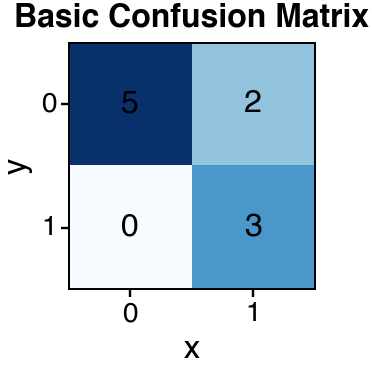
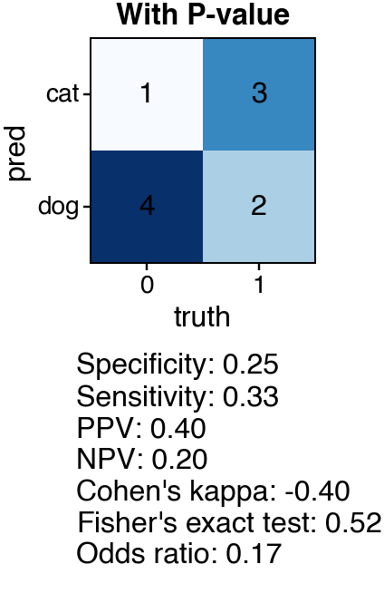
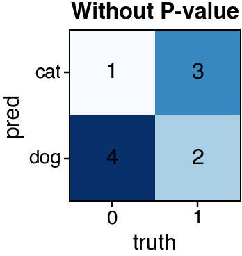
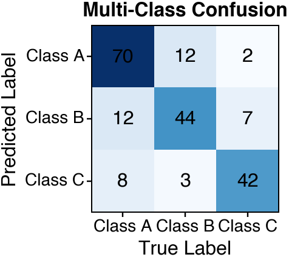
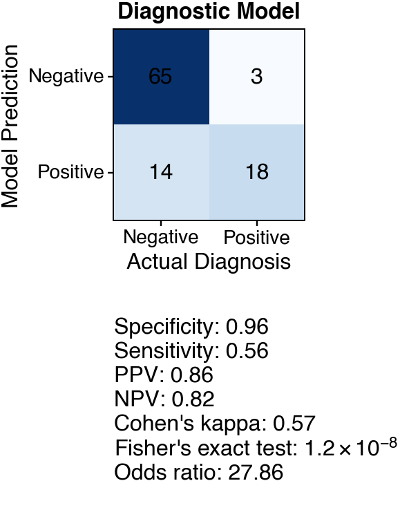
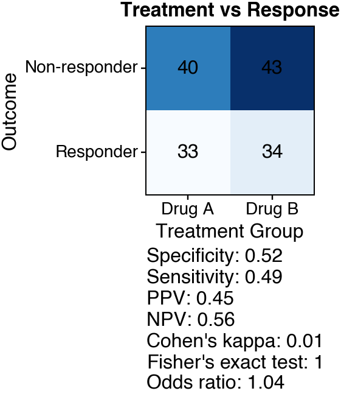
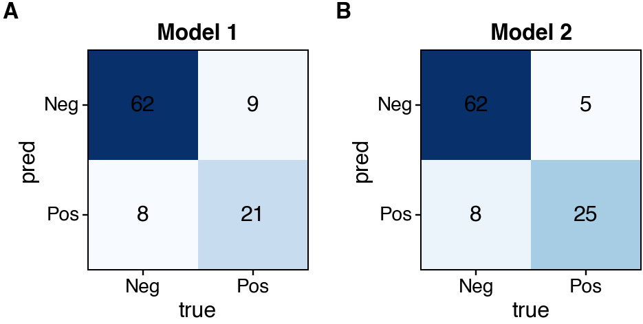

Note
Go to the end to download the full example code.
Confusion Matrix¶
Create confusion matrix heatmaps with optional statistical testing.
Confusion plots visualize the relationship between two categorical variables, commonly used for classification results. Fisher’s exact test can be used to assess statistical significance.
Load packages¶
import numpy as np
import pandas as pd
import cnsplots as cns
Create sample data¶
Binary classification example.
data1 = pd.DataFrame(
{"x": [0, 1, 1, 0, 1, 1, 1, 0, 0, 0], "y": [0, 1, 0, 0, 1, 1, 0, 0, 0, 0]}
)
# Multi-class example.
data2 = pd.DataFrame(
{
"truth": [0, 0, 0, 1, 1, 1, 1, 0, 1, 0],
"pred": ["dog", "dog", "cat", "cat", "cat", "dog", "dog", "dog", "cat", "dog"],
}
)
Basic confusion matrix¶
Simple 2x2 confusion matrix.
cns.figure(80, 80)
ax = cns.confusionplot(data=data1, x="x", y="y")
ax.set_title("Basic Confusion Matrix")

Text(0.5, 1.0, 'Basic Confusion Matrix')
Confusion matrix with Fisher’s exact test¶
Add p-value from Fisher’s exact test.
cns.figure(100, 80)
ax = cns.confusionplot(
data=data2,
x="truth",
y="pred",
add_pvalue=True,
pvalue_x_pad=0.35,
pvalue_y_pad=1.5,
positive_x=1,
positive_y="dog",
x_order=[0, 1],
y_order=["cat", "dog"],
)
ax.set_title("With P-value")

Text(0.5, 1.0, 'With P-value')
Confusion matrix without p-value¶
Show counts only.
cns.figure(80, 80)
ax = cns.confusionplot(
data=data2,
x="truth",
y="pred",
add_pvalue=False,
x_order=[0, 1],
y_order=["cat", "dog"],
)
ax.set_title("Without P-value")

Text(0.5, 1.0, 'Without P-value')
Larger classification example¶
Create a more realistic classification result.
np.random.seed(42)
n_samples = 200
# Simulate predictions with some errors
true_labels = np.random.choice(
["Class A", "Class B", "Class C"], n_samples, p=[0.4, 0.35, 0.25]
)
pred_labels = true_labels.copy()
# Add classification errors
error_mask = np.random.random(n_samples) < 0.2 # 20% error rate
for i in np.where(error_mask)[0]:
choices = ["Class A", "Class B", "Class C"]
choices.remove(true_labels[i])
pred_labels[i] = np.random.choice(choices)
multi_class_data = pd.DataFrame({"truth": true_labels, "prediction": pred_labels})
Multi-class confusion matrix¶
Visualize 3x3 classification results.
cns.figure(100, 100)
ax = cns.confusionplot(
data=multi_class_data,
x="truth",
y="prediction",
add_pvalue=False,
x_order=["Class A", "Class B", "Class C"],
y_order=["Class A", "Class B", "Class C"],
)
ax.set_xlabel("True Label")
ax.set_ylabel("Predicted Label")
ax.set_title("Multi-Class Confusion")

Text(0.5, 1.0, 'Multi-Class Confusion')
Binary classification with custom labels¶
Cancer diagnosis example.
np.random.seed(123)
diagnosis_data = pd.DataFrame(
{
"actual": np.random.choice(["Positive", "Negative"], 100, p=[0.3, 0.7]),
}
)
# Simulate model predictions with 85% accuracy
diagnosis_data["predicted"] = diagnosis_data["actual"].copy()
flip_mask = np.random.random(100) < 0.15
diagnosis_data.loc[flip_mask, "predicted"] = diagnosis_data.loc[
flip_mask, "actual"
].apply(lambda x: "Negative" if x == "Positive" else "Positive")
cns.figure(90, 90)
ax = cns.confusionplot(
data=diagnosis_data,
x="actual",
y="predicted",
add_pvalue=True,
positive_x="Positive",
positive_y="Positive",
x_order=["Negative", "Positive"],
y_order=["Negative", "Positive"],
)
ax.set_xlabel("Actual Diagnosis")
ax.set_ylabel("Model Prediction")
ax.set_title("Diagnostic Model")

Text(0.5, 1.0, 'Diagnostic Model')
Treatment response confusion matrix¶
Compare treatment outcomes across groups.
np.random.seed(456)
treatment_data = pd.DataFrame(
{
"treatment": np.random.choice(["Drug A", "Drug B"], 150),
"response": np.random.choice(["Responder", "Non-responder"], 150, p=[0.4, 0.6]),
}
)
cns.figure(90, 90)
ax = cns.confusionplot(
data=treatment_data,
x="treatment",
y="response",
add_pvalue=True,
pvalue_y_pad=1.3,
positive_x="Drug A",
positive_y="Responder",
x_order=["Drug A", "Drug B"],
y_order=["Non-responder", "Responder"],
)
ax.set_xlabel("Treatment Group")
ax.set_ylabel("Outcome")
ax.set_title("Treatment vs Response")

Text(0.5, 1.0, 'Treatment vs Response')
Comparing two confusion matrices¶
Side-by-side comparison of different models.
mp = cns.multipanel(max_width=255)
# Model 1: Lower accuracy
model1_data = pd.DataFrame(
{
"true": np.repeat(["Pos", "Neg"], [30, 70]),
"pred": np.concatenate(
[
np.random.choice(["Pos", "Neg"], 30, p=[0.7, 0.3]),
np.random.choice(["Pos", "Neg"], 70, p=[0.2, 0.8]),
]
),
}
)
mp.panel("A", 80, 80)
cns.confusionplot(
data=model1_data,
x="true",
y="pred",
add_pvalue=False,
x_order=["Neg", "Pos"],
y_order=["Neg", "Pos"],
)
mp.get_axes("A").set_title("Model 1")
# Model 2: Higher accuracy
model2_data = pd.DataFrame(
{
"true": np.repeat(["Pos", "Neg"], [30, 70]),
"pred": np.concatenate(
[
np.random.choice(["Pos", "Neg"], 30, p=[0.9, 0.1]),
np.random.choice(["Pos", "Neg"], 70, p=[0.1, 0.9]),
]
),
}
)
mp.panel("B", 80, 80, margin_right=0)
cns.confusionplot(
data=model2_data,
x="true",
y="pred",
add_pvalue=False,
x_order=["Neg", "Pos"],
y_order=["Neg", "Pos"],
)
mp.get_axes("B").set_title("Model 2")

Text(0.5, 1.0, 'Model 2')
Total running time of the script: (0 minutes 0.323 seconds)